Álvaro · lunes nada de pan · Auditoría v1
Reedición de Claude frente a la versión del motor. Escribe en cada escena qué mejorarías; al final pulsa «Copiar correcciones» y pégamelo. Cada corrección la guardo como propuesta de regla y en el banco de criterio.
7 de 10 comprobaciones generales en OK
El vídeo
Ahora · Claude v1 (19,1 s)
Antes · motor v1 (17,1 s)
El aspecto
Rojo de su marca
#FF5F57 · lo prohibido, ✕
Azul de su marca
#3A86FF · la manzana, ✓
Blanco
texto y semana encendida
Negro
semana apagada, botón
SF Pro Bold · rellenoPANSequel Heavy · palabra especial
Comprobaciones generales
| OK | Encuadre: se ve a quien habla en todo el vídeo | La v1 tenía 9 de 17 s sin persona |
| OK | Los dos personajes en el mismo cuadro | Mesa, puerta y sofá |
| OK | Dos familias de letra | SF Pro + Sequel Heavy (la v1, tres) |
| OK | Color de su marca | Rojo #FF5F57 lo prohibido, azul #3A86FF la manzana (decidido por Luis) |
| OK | Volumen | −14,6 LUFS, pico real −1,3 dB, sin saturación |
| OK | Efectos al fotograma | 15 efectos; el 80 % cae a menos de 40 ms de su momento (mediana 10 ms) |
| Falla | Huecos de sonido | 8 huecos de 0,3–1,2 s a −42/−56 LUFS: es la sala del propio bruto, pero muy baja. Prometí rellenarlos y no lo hice |
| No verificado | Música | Sin música: la eliges tú |
| OK | Duración | 19,1 s (la v1, 17,1 s) |
| No verificado | Velocidad real | No puedo ver el vídeo en movimiento: uniones, temblores y halos solo los he mirado en fotogramas |
Escena por escena
1 · Lunes · mesa con baguette
0,0–2,2 s
Qué hice. Las dos tomas superpuestas: el cliente sentado a la izquierda y el entrenador de pie a la derecha, en el mismo cuadro (máscara estática al 60 % del ancho). «PAN» en Sequel Heavy roja (#FF5F57). Arriba, la semana: LUN se enciende y se tacha con ✕ al terminar la frase.
Por qué. Es lo que pidió el alumno: los dos personajes juntos. La semana cuenta el sketch sin añadir texto (banco c012).
- OK Se ve a los dos con la cara dentro del cuadro (la v1 enseñaba una pared vacía)
- OK Golpe grave en «nada»: medido a −2 ms
- Mirar Continuidad del pan en la unión: mirado en 1 fotograma, no en movimiento
2 · Martes · mesa con croissant
2,2–5,5 s
Ahora · Claude v1
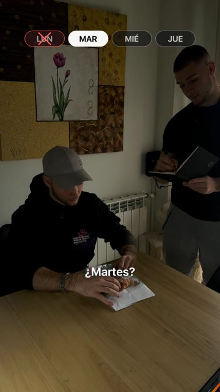
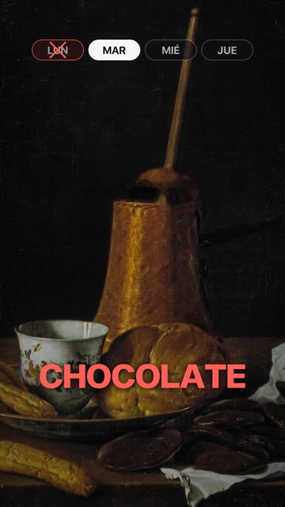
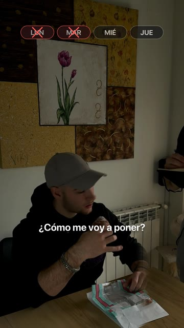
Qué hice. Misma mesa, ahora con el croissant. En «chocolate», la pintura de pan y chocolate 0,75 s con «CHOCOLATE» en rojo (le borré el subtítulo que traía de la v1). Vuelve a la escena y el cliente dice «¿Cómo me voy a poner?» con un zoom al 130 % hacia su cara.
Por qué. La pintura ya no tapa la reacción (fallo de la v1). El zoom era la promesa incumplida del motor y es la reacción más cómica.
- OK Zoom hacia la cara del cliente
- OK El audio de cada frase sale de la toma de quien habla
- Mirar Queda una mancha leve en la pintura donde estaba el texto
- No verificado Si el zoom tiembla: solo he visto fotogramas
3 · Miércoles · puerta
5,5–10,1 s
Ahora · Claude v1
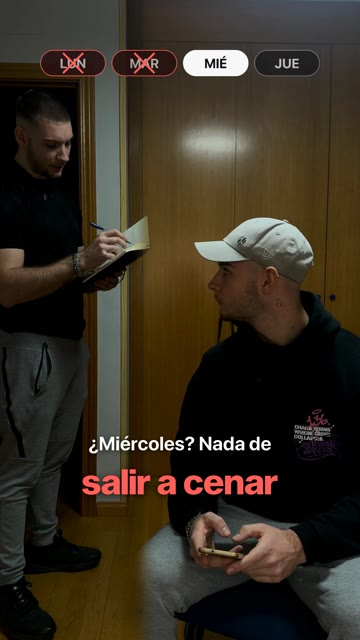
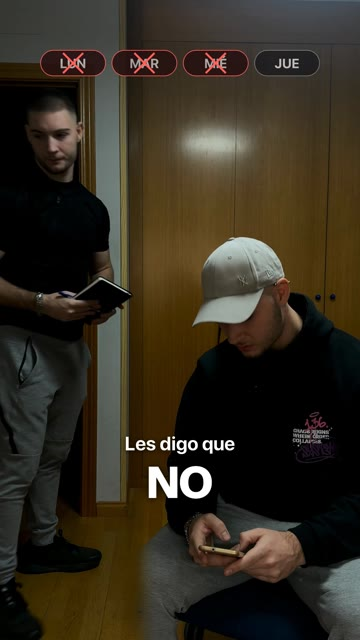
Qué hice. Entrenador de pie a la izquierda con la libreta; cliente sentado a la derecha con el móvil (máscara al 40 %). «salir a cenar» en rojo; «Les digo que NO» con el NO grande en blanco.
Por qué. En la v1 esta escena era una puerta sin nadie a la vista.
- OK Los dos en cuadro
- Mirar Se intuye una franja más clara en la unión
- OK MIÉ se tacha justo antes del «no» del cliente
4 · Jueves · sofá
10,1–13,2 s
Antes · motor v1
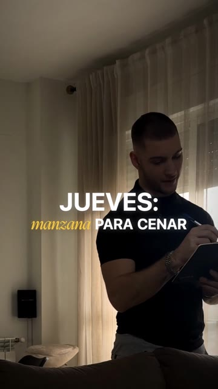
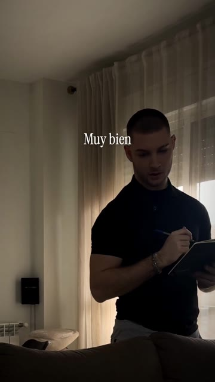
Ahora · Claude v1
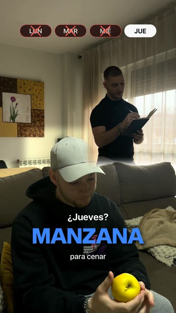
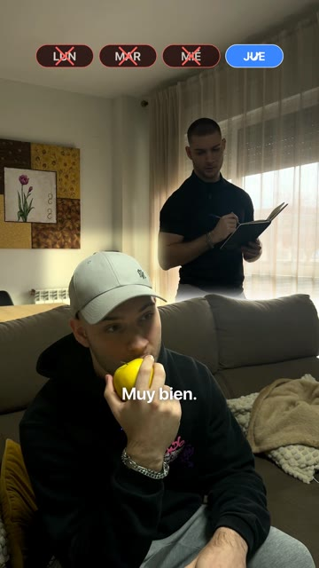
Qué hice. Entrenador de pie detrás del sofá; cliente delante comiendo la manzana (máscara solo en la parte delantera y la gorra; +0,4 EV a su toma porque el sol era distinto). «MANZANA» en el azul de su marca y JUE se marca con ✓. «Muy bien» viene de otra toma del entrenador.
Por qué. Es el único día que hace bien: el ✓ azul lo distingue de los tres ✕.
- OK Luz de las dos tomas igualada
- Mirar Salto en la mitad del entrenador a 12,3 s al cambiar de toma para «Muy bien»
- Mirar Halo leve en el borde del respaldo
5 · Cocina · el cliente en la nevera
13,2–15,7 s
Qué hice. Plano solo del cliente con gorra abriendo la nevera. Sin texto. La semana sigue arriba (✕ ✕ ✕ ✓).
Por qué. Prepara el remate: el «día bueno» no lo era tanto.
- Mirar 2,5 s sin texto ni gráfico: puede no entenderse que está picando a escondidas
- No verificado No hay cartel de hora («Jueves, 23:47»); sería una idea mía, no estaba en el plan
6 · Remate · «¿Pero qué haces?»
15,7–19,1 s
Antes · motor v1
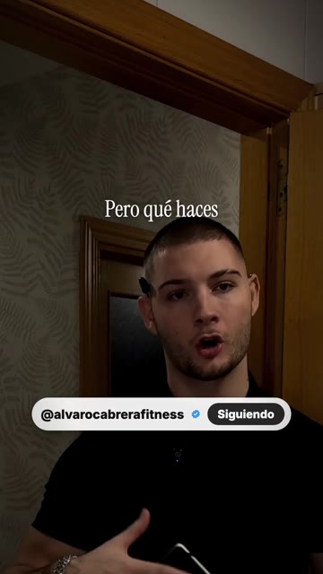
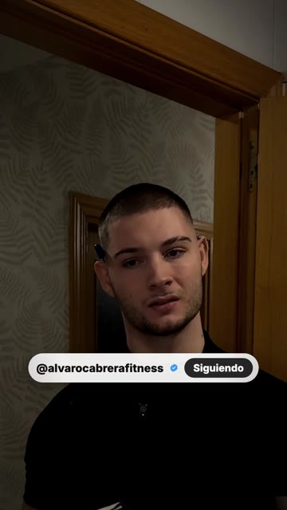
Ahora · Claude v1
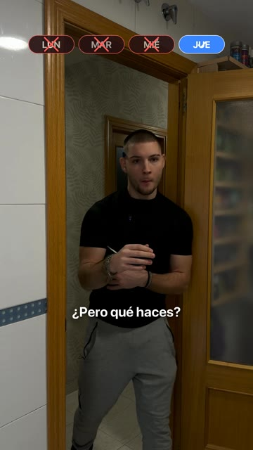
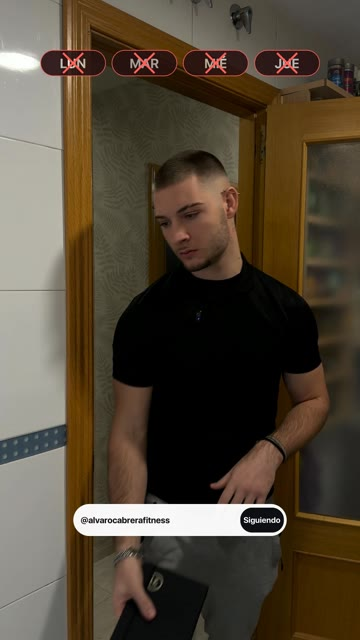
Qué hice. El entrenador en la puerta de la cocina. Al decir «haces», el ✓ azul del jueves se vuelve ✕ rojo con golpe grave. Después, el botón «Seguir → Siguiendo».
Por qué. El cambio del ✓ al ✕ es el chiste en un gesto (idea mía, fuera del plan). El botón va después del remate, no encima.
- OK Golpe y ✕ a la vez (medido a +25 ms)
- Mirar El botón dura solo 0,95 s; el vídeo se acaba con la frase
- Mirar En el último segundo el entrenador camina hacia cámara